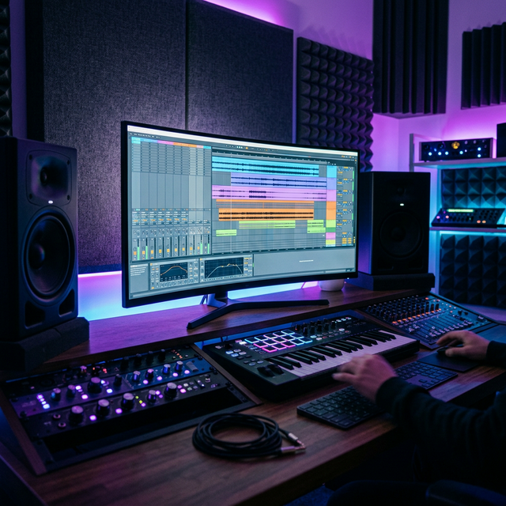
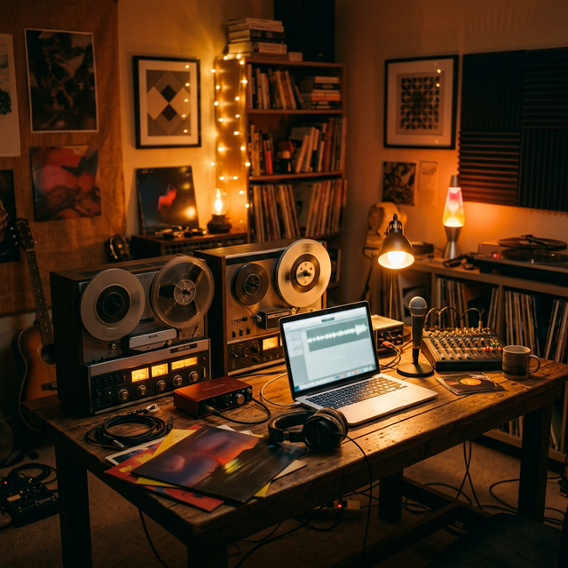
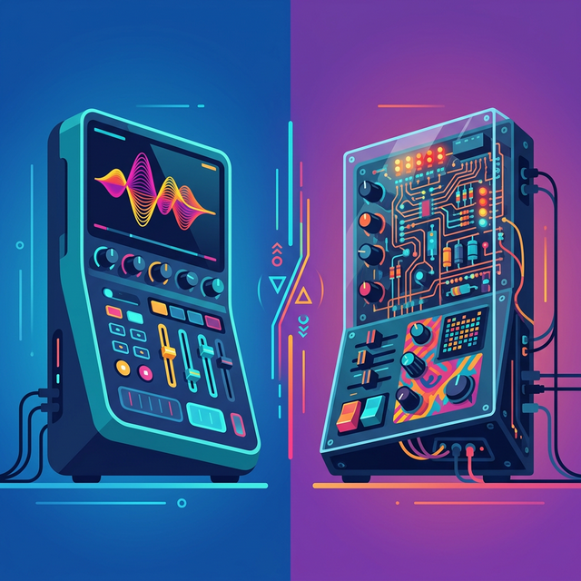

BEST FREE VST PLUGINS 2026 (The Essential List)
Stop throwing your rent money at massive plugin bundles. Discover the absolute best free VST3 plugins of 2026 for synths, mixing, and effects.
Actionable guides and tier-lists for the modern beatmaker.

Stop throwing your rent money at massive plugin bundles. Discover the absolute best free VST3 plugins of 2026 for synths, mixing, and effects.
A comprehensive, step-by-step unlisted guide to mastering your music using 100% free digital signal processing tools.

Achieve the perfect analog warmth, flutter, and degraded texture for zero cost using Chow Tape Model and more.

Level up your sound design arsenal without spending a dime. We compare the heavyweights like Vital and Surge XT.